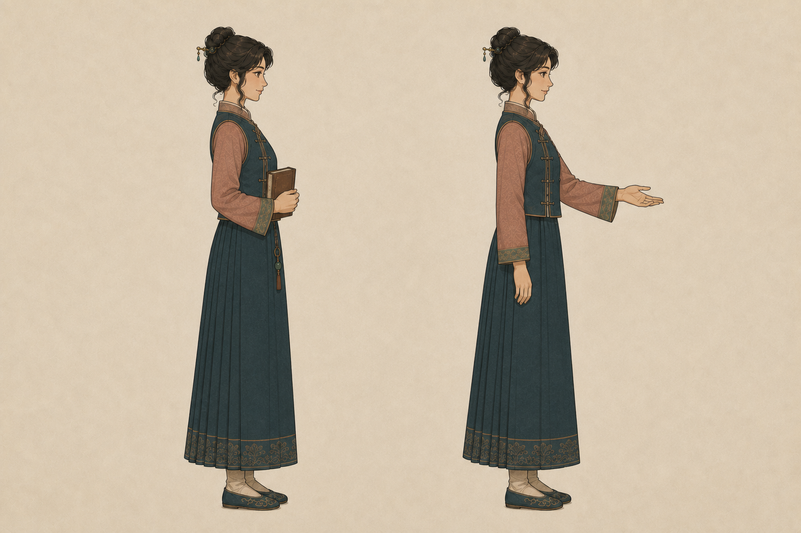

同福客栈大堂 · 午后
当前目标调查镇东陌生来客
佟掌柜可交谈

白
银两 842食材 126声望 36第 3 日
镇东风声
前往城西码头，打听账簿下落。
附近热点
队伍状态
三人小队
点击队员切换当前探索角色。
今日经营
预计收入 +126 两
菜单
任务簿
佟湘玉
展堂，你先别急着往镇东跑。账本上的墨还没干，这事儿不简单。

前往城西码头，打听账簿下落。
点击队员切换当前探索角色。
展堂，你先别急着往镇东跑。账本上的墨还没干，这事儿不简单。